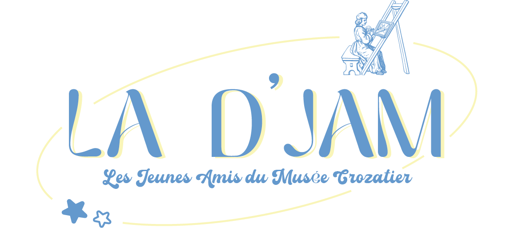
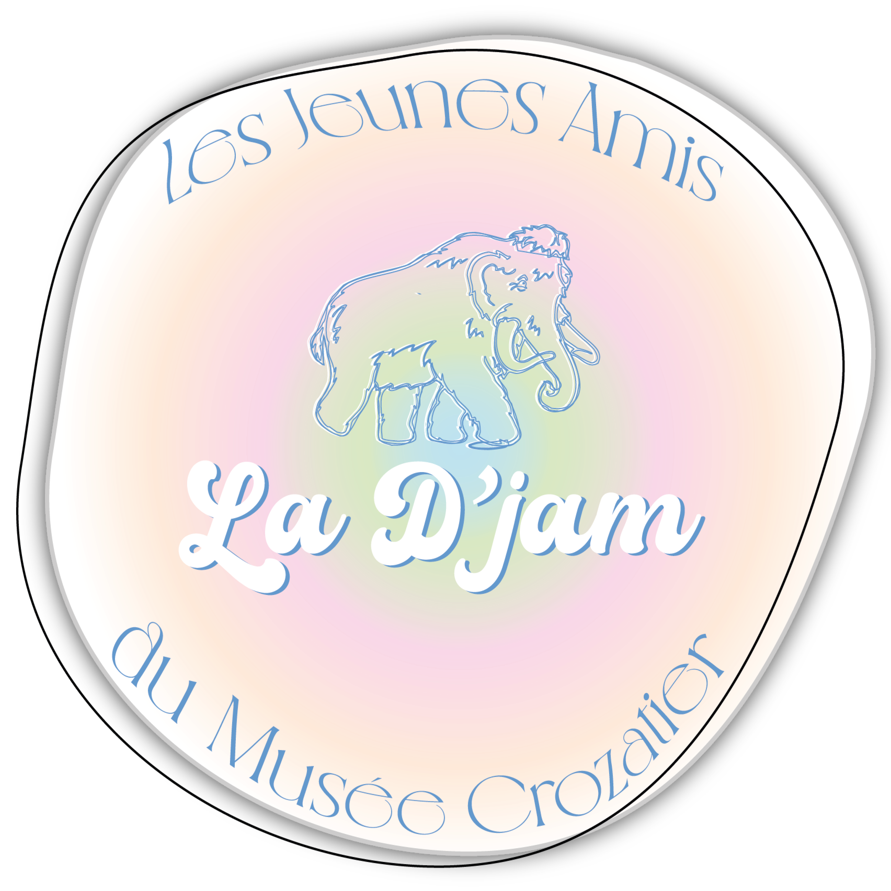

La D'Jam, c'est quoi ? ✧˖°.
Les Jeunes Amis du Musée Crozatier, situé au Puy-en-Velay, sont un groupe qui rassemble les moins de 35 ans et les étudiants autour de sorties culturelles, de visites exclusives et de tarifs réduits pour découvrir le musée autrement.
Contexte du projet ✧˖°.
‧˚ʚ Ce projet consistait à moderniser l'identité de l'association Les Jeunes Amis du Musée Crozatier pour l'adapter à son évolution. L'objectif était de créer un univers graphique épuré pour attirer de nouveaux publics et d'obtenir un design mémorisable et cohérent sur tous les supports.
‧˚ʚ Ce projet m'a permis de développer mes compétences en direction artistique, en conception de logo sur Adobe Illustrator, en mise en page print sur InDesign, ainsi que ma capacité à livrer une identité visuelle cohérente et adaptée à une cible précise dans le cadre d'un projet avec un client réel.
Démarche & Réalisation ✧˖°.
‧˚ʚ Après l’audit de l'ancienne communication, j’ai réalisé un moodboard pour explorer différentes pistes (couleurs, formes, typographies), puis dessiné plusieurs croquis de logo avant de vectoriser le logotype final. Le projet a abouti à une charte graphique complète déclinée sur différents supports print, dont un kakémono.
Rendus ✧˖°.

Logo personnel que j'ai imaginé et conçu pour l'association, axé sur la modernité grâce au duo du bleu clair et du jaune pastel. Ces couleurs apportent une esthétique fraîche, jeune et accessible. Utilisation de Adobe Illustrator.

Logo final de l'union de nos deux
logos avec mon binôme. Nous avons choisi un dégradé de couleurs pastel apportant un univers doux
et tendance, dépoussiérant l'image du musée pour attirer un public jeune. L'association d'une
écriture rétro bouncy vintage et d'une police fine sans-serif crée un contraste fluide entre
modernité et élégance.
Utilisation de Adobe Illustrator.

Kakemono destiné aux événements et salons de l'association. Utilisation de Adobe Indesign.